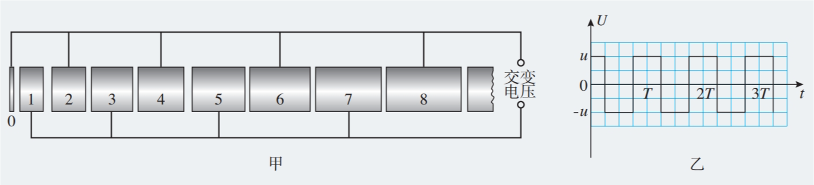
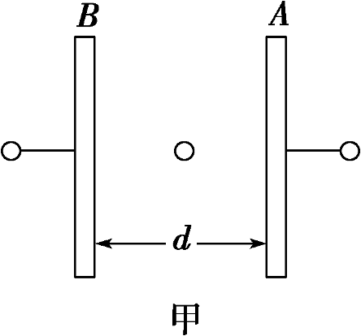
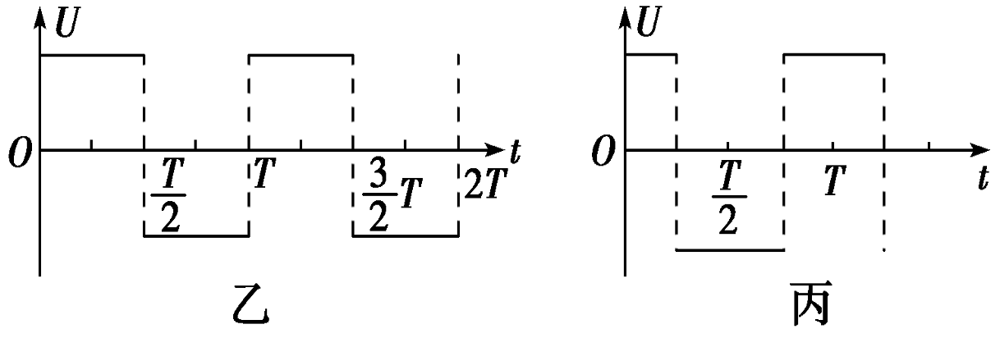
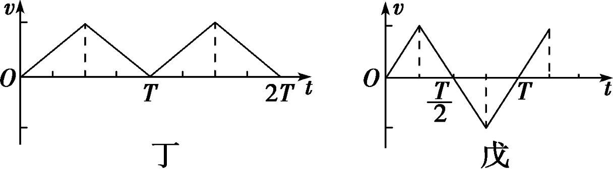
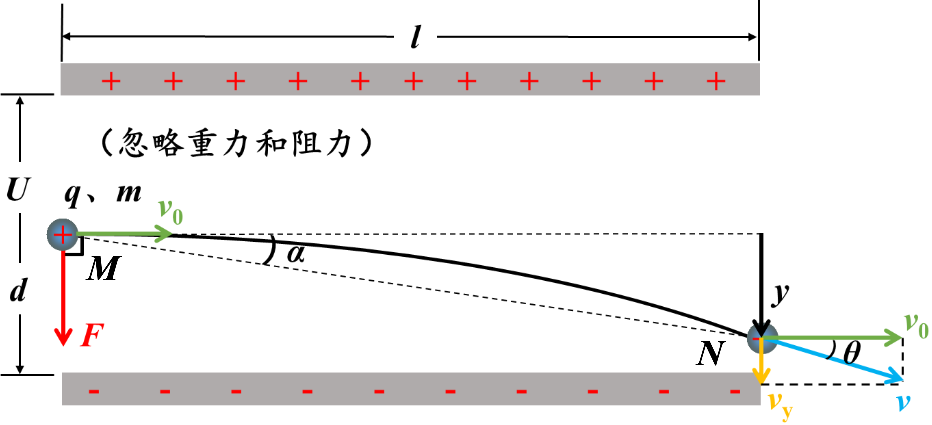

直线加速度器的设计
- 在两平行板构成的匀强电场中，要使质子由静止被加速到 1.0\times 10^{8}\;m /s，已知质子的比荷为 9.6\times 10^{7}\; C/kg，估算加速电压为多少？
- 在不改变电压的情况下，增大极板的距离，则粒子获得的最大速度会变吗？
- 如此高的电压，你认技术上有困难吗？如果要加速到更大的速度呢？
问题
在 t＝0 时，U_{奇偶} 为正值，此时位于序号为 0 金属圆板中央的一个电子，在圆板和圆筒 1 之间的电场中由静止开始加速，沿中心轴线冲进圆筒 1。为使电子运动到圆筒与圆筒之间各个间隙中都能恰好使静电力的方向跟运动方向相同而不断加速，圆筒长度的设计必须遵照一定的规律。若已知电子的质量为m、电子电荷量为e、电压的绝对值为u，周期为T，电子通过圆筒间隙的时间可以忽略不计。

- 交变电压的周期和粒子在金属桶中运动的时间应满足什么关系？
由于金属导体内部的电场强度等于 0，电子在各个金属圆筒内部都不受静电力的作用，电子在圆筒内的运动是匀速直线运动，只是在相邻圆筒的间隙中才会被加速，因此我们要确保每次经过间隙的时候场强都是向左的。
- 金属圆筒的长度和它的序号之间有什么定量关系？第 n 个金属圆筒的长度应该是多少？
电子在进入第 n 个金属圆筒被加速了 n 次，此时的速度记为 v，由动能定理得 neu = \frac{1}{2}mv^{2}\Rightarrow v = \sqrt{ \frac{2neu}{m} }
由上一问知电子在单个金属圆筒中运动的时间为 \frac{T}{2}，第 n 个圆筒色长度为 l = v\frac{T}{2} = \frac{T}{2}\sqrt{ \frac{2neu}{m} }
练习
在如图甲所示的平行板电容器的两板 A、B 上分别加如图乙、丙所示的两种电压，开始 B 板的电势比 A 板高。在电场力作用下原来静止在两板中间的电子开始运动。若两板间距足够大，且不计重力，试分析电子在两种交变电压作用下的运动情况，并画出相应的 v-t 图象。



带电粒子在电场中的偏转
问题

在一对电压为 U、距离为 d、长为 l 的平行板构成的匀强电场中，一质量为 m，电荷量为 +q 的电子以 v_0 的初速度沿着中心线进入电场，粒子从右侧离开平行板，求：
- 加速度 a，运动时间 t、末速度竖直分量 v_{y}、偏移量 y；
a=\frac{F}{m}=\frac{qE}{m}=\frac{qU}{md}
t=\frac{l}{v_{0}}
v_{y}=at=\frac{qUl}{mv_{0}d}
y=\frac{1}{2}at^{2}=\frac{qUl^{2}}{2mv_{0}^{2}d}
- \theta 是速度的偏角、\alpha 是位移的偏角，分别求 \tan \alpha 和 \tan \theta。
\tan \theta= \frac{v_{y}}{v_{0}}=\frac{qUl}{mv_{0}^{2}d}
\tan \alpha=\frac{y}{x} = \frac{qUl}{2mv_{0}^{2}d}
- 若在平行板右侧 L 处竖直放置一荧光屏，则粒子击中荧光屏的位置？
\frac{y}{L+\frac{l}{2}}=\tan \theta=\frac{eUl}{mdv_{0}^{2}}\Rightarrow y= \frac{eUl}{mdv_{0}^{2}}\left( L+\frac{l}{2} \right)